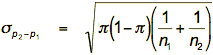
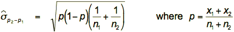

Equal population proportions (probabilities)?
If we are interested in the proportion of individuals with a particular characteristic in two populations, π1 and π2, the first question that is usually asked is:
Are π1 and π2 equal?
After collecting samples of size n1 and n2 from the two populations and observing x1 and x2 with the characteristic in the populations, we base our answer to this question on the difference between the sample proportions, p2 - p1.
However p2 - p1 could easily be non-zero even if π2 - π1 is zero because of the randomness inherent in the sampling.
If the population proportions were equal (π2 - π1 = 0), how far from zero would we expect p2 - p1 to be?
To answer this question, we need to understand the distribution of p2 - p1.
Distribution of p2 - p1 (when π1 = π2)
If the underlying population proportions are equal, π1 = π2, then the distribution of p2 - p1 has the following properties:

Standard deviation in practice
The formula for the standard deviation of p2 - p1 unfortunately contains the unknown common population proportion, π. In practice, we must replace π by an estimate. Since we are finding the distribution when π1 = π2, the best estimate is the overall proportion with the characteristic in the combined samples, p.

You will not need to remember this formula — it is provided to help you understand the test statistic that is derived in the following page.
Illustration
The diagram below selects samples of size 100 from each of two groups. The common probability of success in the groups, π, can be adjusted using the slider at the top.
The normal approximations to the distributions of the individual sample proportions are shown on the right and the normal approximation to the distribution of the difference is shown in pink at the bottom.
Click Accumulate and take several samples. Observe that the sampling variability of the proportions and their difference match the theoretical distributions reasonably.
Note also that the distribution of the difference has greater spread than that of the individual proportions.